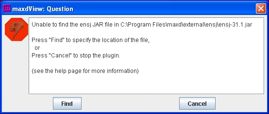
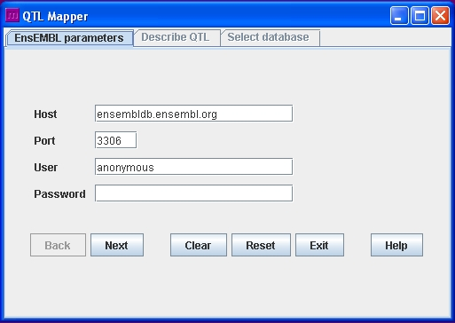
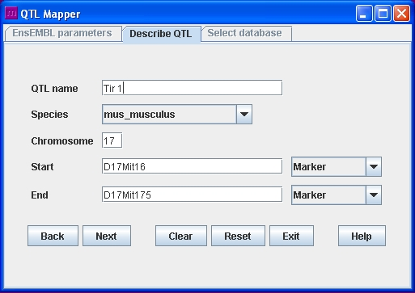
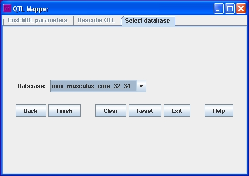
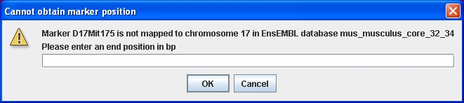
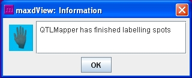

For use with Affymetrix data.
The QTLMapper plugin flags Affymetrix data to indicate which probes represent genes within a user-defined QTL region
This plugin was designed to flag probes within a QTL, but could be used to flag probes within any user-defined region. Marker positions (where used) and the gene for each probe are determined using EnsEMBL
Two external JAR files are required, and (unless already installed) these need to be downloaded on first using the plugin
If a JAR file isn't in the directory maxd expects, you'll see a dialog like this on starting the plugin:

Click "Find" to browse for the JAR file on your local system. If the JAR file isn't already installed, you will need to download and install it first
MySQL connector for Java
Download the latest stable version of the driver from the MySQL connector for Java website. For help on installing this JAR, please see the MySQL connector for Java manual page
EnsEMBL Java module
Download the latest stable version of the EnsEMBL Java module from the Ensj website. Help information on installing the JAR can also be found on this site.
The user interface is divided into 3 panels which are accessed in sequence. These panels share the same set of control buttons, allowing you to return to the previous panel, continue to the next panel, empty all the fields in the panel, reset all the fields in the panel to their initial values, exit the plugin, or show this help information.
If you need more information about what a button does or about any of the fields on the panel, hold the mouse pointer over it and some information will be displayed
The first QTLMapper panel is for parameters to connect to EnsEMBL, so that the list of available species and databases can be retrieved. The default parameters for connecting to EnsEMBL are shown in this screenshot

The second QTLMapper panel is for describing the QTL region. The values shown in this screen shot are just an example

QTL name is required for labelling the column of data that will be added to the maxdView table
Species, Chromosome, Start and End are required to specify the location of the QTL and which species it applies to
Start and End can be given either as marker names or as the position on the chromosome in base pairs. Select the appropriate type from the drop-down list. For positions in base pairs, the position should be given in full not as an abbreviation (e.g. 32500000 rather than 32.5M)
The third QTLMapper panel is for selecting the EnsEMBL database that will be used for checking which genes, and thus which probes, lie within the QTL. If you have never used the QTLMapper before, the most recent database for the species of interest will be selected as a default

After you have finished entering data, QTLMapper will try to retrieve a list of genes within the QTL region and a list of Affymetrix probes that represent these genes.
If you gave the start or end position as a marker name, QTLMapper will check whether the marker is mapped to a position in the database you chose. If not, you will be prompted to enter a base pair position for the marker

It may take several minutes for QTLMapper to check all of the probes in your data set against the QTL. When QTLMapper has finished, a dialog will be displayed to let you know

The output of the QTLMapper is a column added to the maxdView table. The column name is the name of the QTL, and it contains "1.0" for each probe that represents a gene within the QTL and "0.0" for each probe that doesn't (so it is easy to colour the cells with a discrete colouriser to give a clear visual indication of which probes are from within the QTL)